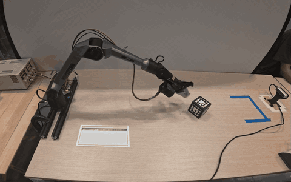
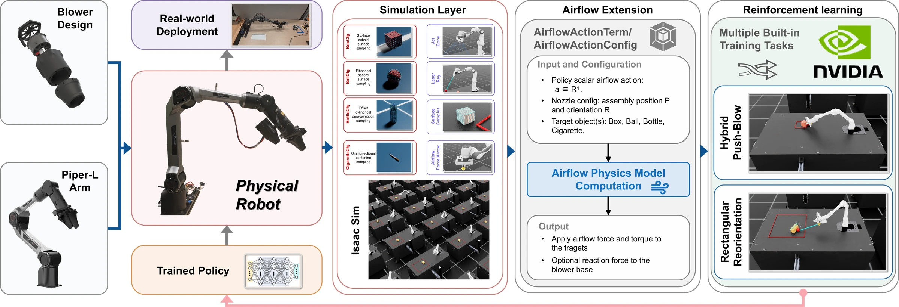
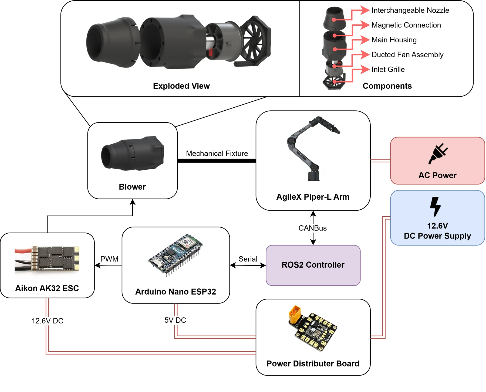
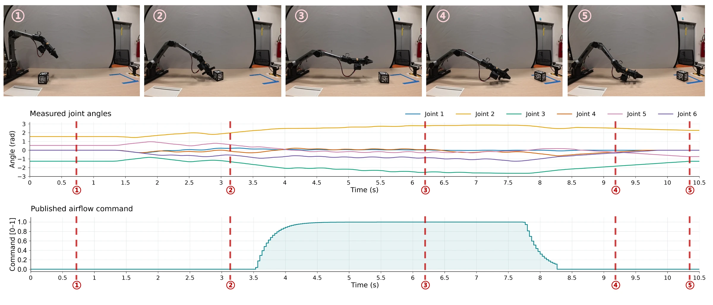

Hybrid push–blow HPB
The robot pushes the cube into a suitable position, then uses airflow to guide it into a target beyond direct reach.

Full experiment recording · 5:00
Real-world trialDownload video
A Reinforcement Learning Framework for
Airflow-Based Non-Contact Manipulation
We equip a robotic arm with a compact blower and train policies to enable non-contact manipulation.
An introduction to the framework, airflow modeling, and real-world experiments.
BeyondContact combines a compact blower design, an airflow extension for Isaac Lab, and two reinforcement learning tasks. The gripper handles contact manipulation; the blower adds a way to act on objects without direct contact.

1
Isaac Lab extension
Reusable airflow simulation
1
Hardware design
Gripper-compatible blower
2
Training tasks
HPB and RR
80%
Real-world HPB success
16 of 20 trials
2.6°
Real-world RR heading error
Mean absolute error · four headings
Policies trained in simulation, zero-shot deployment in aphysical arm without real-world fine-tuning.
The robot pushes the cube into a suitable position, then uses airflow to guide it into a target beyond direct reach.

The robot changes the blowing direction to rotate a cuboid toward a target heading. Gripper–object contact is disallowed.


Real-world evaluation uses a blower-equipped Piper-L on a 0.8 × 1.8 m table, with camera-based object detection and AprilTags for orientation estimation.
| Task | Simulation | Real world | Training time |
|---|---|---|---|
| Hybrid push–blow (HPB) | 88% success | 80% success · 16 / 20 trials | 5.7 h |
| Rectangular reorientation (RR) | 92% success | 2.6° heading MAE · 4 trials with different headings | 6.6 h |
Training times were measured on an NVIDIA RTX 5090 with an Intel U7 265K.


The release contains the airflow extension, two Piper-L task environments, and PPO training and checkpoint playback scripts.
external_blower/blowerblower_arm_rlUse Isaac Sim 5.1.0, a compatible Isaac Lab installation, Python 3.11, PyTorch, and RSL-RL. Run these commands from the repository root. Editable installs keep robot and object assets accessible from the source checkout.
python -m pip install -e external_blower/blower/source/blower
python -m pip install -e blower_arm_rl/source/blower_arm_rl
python blower_arm_rl/scripts/list_envs.pyHybrid push–blow
python blower_arm_rl/scripts/rsl_rl/train.py --task Isaac-Blower-Piper-GripperAssistBoxPush-v0 --headless
python blower_arm_rl/scripts/rsl_rl/play.py --task Isaac-Blower-Piper-GripperAssistBoxPush-Play-v0 --num_envs 1 --checkpoint /path/to/model.ptRectangular reorientation
python blower_arm_rl/scripts/rsl_rl/train.py --task Isaac-Blower-Piper-GripperAssistCuboidOrientation-v0 --headless
python blower_arm_rl/scripts/rsl_rl/play.py --task Isaac-Blower-Piper-GripperAssistCuboidOrientation-Play-v0 --num_envs 1 --checkpoint /path/to/model.pt